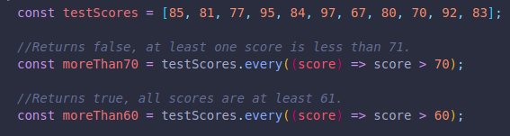
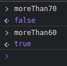
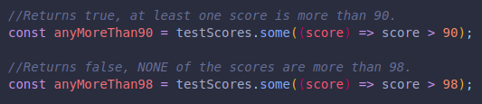
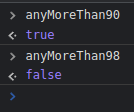

These methods help us return true or false, they are boolean methods.
This method will check for our expression, and if every item passes the test, it will return true, otherwise false.
 This methos will return true if at least one item passes the test.
It will only return false if NONE of the items pass.
 